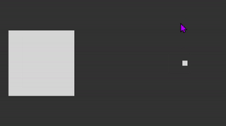

Do one demo in processing which can use mouse or keyboard to interactive
Moving the mouse changes the position and size of each box.Use the mouse to interact, below is the code and comments, and there are video effects.
//Moving the mouse changes the position and size of each box.
void setup() {
size(640, 360);
noStroke();
rectMode(CENTER);//背景矩形在中间
}
void draw() {
background(51);
fill(255, 204);//设置了透明度，可以看到重叠的时候
rect(mouseX, height/2, mouseY/2+10, mouseY/2+10);//第一个矩形，跟着鼠一起标动
fill(255, 204);//设置了透明度，可以看到重叠的时候
int inverseX = width-mouseX;//定义第二个矩形的横坐标数据，同时也用在变换大小上
int inverseY = height-mouseY;//定义第二个矩形的变换大小上关系元素
rect(inverseX, height/2, (inverseY/2)+10, (inverseY/2)+10);//第二个矩形，不跟鼠标在一起的，反方向动
}
